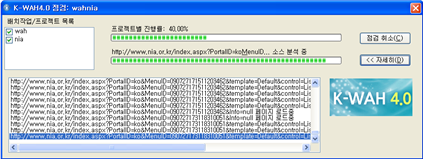

배치작업 실행
- [배치 점검 실행 창 열기]
- 배치 점검 실행 창에서 좌측의 배치작업 목록은 해당 배치 작업에 포함된 프로젝트를 순서대로 보여줍니다. 또한 프로젝트 목록 앞의 체크상자는 프로젝트의 점검이 완료되었는지를 알려주는 표시입니다. 체크 표시는 점검중 또는 완료 상태를 나타냅니다.
- 프로그레스 바: 배치작업 실행창은 두개의 프로그레스바를 포함하고 있습니다.
- 첫번째 프로그레스 바는 각 프로젝트의 점검 진행률을 백분율로 표시합니다. 100 페이지를 점검해야 한다면 웹페이지를 점검할 때마다 1%가 증가됩니다.
- 두번 째 프로그레스 바는 웹페이지별 점검 진행정도를 알려줍니다. 따라서 두번 째 프로그레스 바의 변화 속도는 첫번 째 프로그레스 바의 변화 속도에 비하여 빠릅니다.
- 오른 쪽의 [점검 취소] 버튼을 클릭하면 진행 중인 배치작업을 종료합니다. 작업중 종료하면 이미 실행된 점검 결과도 폐기되므로 각별히 주의해야 합니다.
- 오른 쪽의 [자세히] 버튼을 누르면 배치 작업 실행에 따른 진척 사항(점검 중인 URL, 작업 내용 및 상태 등)을 보여주는 로그 목록이 나타납니다. 이 버튼을 한번 더 누르면 로그 목록이 닫히게 됩니다. 아래 그림은 로그 목록이 열린 상태를 보여줍니다.
- [점검 완료]
- [확인] 버튼을 누르면 배치 작업 점검 결과 창으로 이동합니다.
- [자세히] 버튼의 역할은 작업에 따른 로고 목록을 보여주는 버튼으로 로그 목록의 모습은 배치 점검 실행 창의 경우와 동일합니다.
배치작업이 시작되면 다음 그림과 같은 배치 점검 실행 창이 열리고, 배치 작업 목록 순서로 프로젝트 자동 점검이 시작됩니다.

배치 작업이 모두 완료되면 프로그레스 바 위에 "점검이 완료되었습니다"라고 하는 메시지가 나타나 배치 작업이 성공적으로 종료되었음을 알려줍니다.